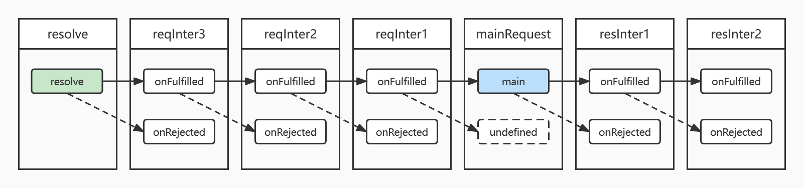

Axios 中关于 Promise 的使用与理解
本文最后更新于：2022年7月13日 中午
最近在看了 Axios 的源码。在已有 XMLHttpRequest 的情况下，Axios 做了哪些改进吸引大家使用？抱着这样的想法尝试理解与阅读 Axios 仓库。

Axios 的基本组成
这里的基本组成是指
lib文件夹下的内容。其他文件夹主要是用来存放示例文件、测试文件、开源相关说明文件等。
首先，观察目录结构。每个模块的作用可以通过文件夹的名字了解个大概。整个结构也非常整洁，还是很适合初学者（比如笔者）阅读的。
adapters/为提供 HTTP 请求的适配器。用以支持 node.js 与 浏览器发送 HTTP 请求。cancel/负责实现请求取消的功能。包含了将要废除的 Cancel Token 模式的实现。core/为核心内容，主要负责加载配置文件、处理拦截器、发送请求等功能。defaults/存放一些默认的配置文件。env/自动生成，主要用来标识版本。helpers/各种各样的帮助文件，显然里面有一些功能已经成为 JavaScript 的内置功能了，交给 Babel 也未尝不可。axios.js入口文件。除了暴露 API 以外，还有一小部分逻辑用来实现非实例化直接使用的功能。utils.js一些小工具函数。感觉也有不少其实可以直接调用 JavaScript 的内置函数。主要还是减少工作环境的影响。
Axios 既然被称之为基于Promise的网络请求库，其对于 JavaScript 中 Promise 的理解也应该是非常透彻的。本文主要针对笔者所认为两处对 Promise 特性运用较为充分的两部分进行介绍。
在开始下文之前，还需要介绍一下 Axios 是通过 config 控制的。这个 config 除了 url 以外，还包含 headers、proxy 等其他配置。可以认为 Axios 实例如果传入相同的 config，就会执行完全一致的操作。
Axios 中关于拦截器的实现
Axios 中的拦截器
拦截器的作用是在发送请求前与收到响应后分别对请求与响应进行处理，从而实现一些便捷操作。例如 JWT 权限验证、响应数据的分析等。拦截器使用如下方式定义：
1 | |
对照 core/InterceptorManager.js，可以发现还包含了一个 options 选项，为拦截器提供特殊功能。
1 | |
了解了这些，就可以仔细看看 Axios 是如何实现拦截器的。
首先，对请求拦截器与响应拦截器进行处理。判断是否包含异步拦截器、跳过部分拦截器。主要注意的是，请求拦截器中后绑定的放在队列的前面（unshift），响应拦截器则相反（push）。其中，Axios 默认所有请求拦截器都是异步的，即interceptor.synchronous = false;。
拦截器列表由偶数个函数构成，每两个函数一组。分别表示一个拦截器的执行函数与错误处理函数。类似于 Promise.prototype.then() 的入参。
1 | |
之后，Axios 针对异步请求拦截器与同步请求拦截器分情况进行了处理。其中如果所有请求拦截器都是同步的，则循环执行更新 config 即可。下面介绍包含异步的拦截器链进行介绍。
- 把主请求（指除去拦截器以外的请求）与一个空元素放在列表中间。然后将请求拦截器列表放在前面，把响应拦截器列表放在后面。
- 调用
Promise.resolve()函数，生成一个Promise对象。 - 将拦截器列表中的元素两个一组，放入
then中，并将返回的新Promise替代原始的Promise。 - 返回最终得到的
Promise链。
将上述 Promise 链具体化，如下图所示。

您可能发现了，这里面请求拦截器的
onRejected好像有些诡异。是的，笔者也是写到这里才发现这个问题，现已提交 issue。
1 | |
Promise 链中所有在主请求前的 Promise 传递修改 config，在主请求后的 Promise 传递并修改 response。这样就完成了对请求和响应的拦截。那么 Promise.resolve() 与 Promise.prototype.then() 是如何实现这个可以把同步请求也包装进 Promise 链的功能的？
Promise.resolve()
参考 MDN 中关于 Promise.resolve() 的描述，可以发现其作用就是返回一个新的 Promise。但根据入参的类型不同行为有一定区别。
- 如果是另一个
Promise，则返回这个Promise - 如果是一个含有
then方法的对象，则会尝试执行该then方法，根据执行结果返回对应状态的Promise。（类似于new Promise(then)）这里会递归执行所有嵌套的then，直到fuilfilled或者rejected。 - 其他情况则返回一个新的
Promise，并且这个Promise将处于fulfilled状态，fulfilled值为入参。
可以发现这个函数非常适合将一个对象包装成 Promise，并作为 Promise 链的开头使用。
如果对上述描述还有困惑的话，可以参考下面的简易 Polyfill。（不过都有 Promise 了，还能没有 Promise.resolve() 么）
1 | |
对于这种含有 then 方法的对象，可以称之为 thenable。可以认为是一个 弱化版 的 Promise，但没有JavaScript解释器的 微任务 的保障。为了加深对 thenable 的印象，来看下面这个例子。
1 | |
在注释和取消注释 throw 语句之后，console 中分别输出以下内容。
1 | |
如果根据上文给出的 Polyfill 理解 Promise.resolve() 的话，输出应该都是 FULFILLED with: {then: function ...}，因为只调用了两次 then，第三个对象应该会作为 fulfilled 的值传给 value。这就说明 Promise.resolve() 会尝试解析 thenable 的最终结果，并把最终结果包装成 Promise 进行返回。
因此如果使用 thenable 特性的时候，不要将自身作为 fulfilled 的值，否则解释器会死循环。（不过应该没有多人想用 thenable 吧。）
1 | |
PS: 其实尝试执行的话，发现上面
Promise.resolve()的 Polyfill 也是正确的。可能是因为Promise构造函数在入参（执行器）执行过程中调用的resolve()与Promise.resolve()的功能相同。
Promise.prototype.then()
如果使用过 Axios 的话，那对于 Promise.prototype.then() 应该不陌生了。其作为构建 Promise 链的胶水，传入两个函数分别处理前一个 Promise 处于 fulfilled 或者 rejected 状态下的执行内容。然而正因为then 返回值的特性，才使得其可以作为构建 Promise 链的胶水使用。
下文中的执行函数指的是
onFulfilled或onRejected。
- 当执行函数返回一个值，则
then函数返回一个fulfilled状态的Promise，fulfilled值为执行函数的返回值 - 当执行函数不返回任何值，则
then函数返回一个fulfilled状态的Promise,fulfilled值为undefined - 当执行函数抛出一个错误，则
then函数返回一个rejected状态的Promise，rejected值为该错误。 - 当执行函数返回一个
Promise，则then函数返回该Promise。
可以发现 Promise.prototype.then() 也有包装非 Promise 的作用。那么 Promise.prototype.then() 会和 Promise.resolve() 一样尝试处理 thenable 么？答案是会的。就不在下文举例说明啦。
Axios 中关于取消的实现
Axios 中的 CancelToken
其实当本文撰写过程中，Axios 已经声明将 CancelToken 废弃（Deprecated）。不过源码中还包含这部分功能的实现，还是值得一看的。
先简单介绍一下怎么使用 CancelToken 取消一个正在执行的请求。使用 CancelToken.source() 工厂函数获得一个 token 操作对象 source。将 token 传入 config 中即可控制该请求是否需要取消。取消时执行 source.cancel() 即可。
1 | |
不过，工厂函数方案其实是对 CancelToken 的一个封装。工厂函数如下：
1 | |
发现 cancel 函数通过 CancelToken 构造函数执行入参函数的方式暴露的，可以说是非常扭曲了。不过概括起来，CancelToken 对象为用户提供了两个元素：token 与 cancel 函数。
先观察 cancel 函数，执行该函数会给 reason 赋值，并传入 resolvePromise 函数。通过判断 reason 是否已经存在来判断 cancel 函数是否已经被执行。
1 | |
这个 resolvePromise 是用来 resolve 一个 Promise 的。（和没说一样） 具体而言，使用外部变量将 Promise 中的执行器入参暴露出来，从而实现在任意位置控制这个 Promise 的状态。后面会详细介绍 Promise 构造器的工作方式。
1 | |
有了这个“扳机”，怎样实现请求的取消呢？先看看这个“扳机”后面都链接了什么内容。可以发现 Axios 在这个“扳机”后面调用了 Promise.prototype.then() 函数。由于“扳机”一直处于 pending 状态，then 的入参函数也将不会执行。阅读后可以发现这个函数主要执行与该 token 绑定的每个函数。这属于设计模式中的 观察者模式 。
1 | |
后面就不过多展示源码了，主要包含以下几部分内容：
- 实现订阅函数与取消订阅函数
- 在请求发送前、请求发送后判断是否已经执行取消操作
- 与
http或xhr联动，实现取消功能。
不过还有一个额外的问题，在提交历史和其他介绍文章中也没有看到合适的解释：
在
lib/cancel/CancelToken.js中，CancelToken构造函数内。在上述执行then函数的操作后，又新写了一个then方法。不知道这个then方法是用来做什么的。
如果有了解的同学希望不吝赐教。
Promise() 构造器
这部分在 MDN 上的中文文档有我参与翻译的部分。当时也主要是因为原始版本与英文版本相距甚远，于是按照英文版本的文档进行了完善。笔者认为阅读过该文档，应该会对 Promise() 构造器 及其入参函数有进一步的理解。
1 | |
入参函数 executor 决定了这个新 Promise 的行为是怎样的。executor 有两个参数构成，当然这两个参数传不传都不会报错，但如果连 onFulfilled 都不传的话，这个新 Promise 将会永久处于 pendding 状态。
这里使用与 MDN 文档上不同的入参命名方式，主要是考虑到与上文的一致性。
1 | |
如何改变这个 Promise 的状态呢？有以下三种情况：
- 调用
onFulfilled(value)，新 Promise 为fulfilled，fulfilled值为value。 - 调用
onRejected(reason)，新 Promise 为rejected，rejected值为reason。 onFulfilled函数出现异常，新 Promise 为rejected，rejected值为该异常。
此外 executor 自身的返回值将会被忽略。所以 Promise() 构造器的主要作用是将一个异步操作包装成 Promise。
结语
本文主要还是笔者个人的想法居多，以学习的角度详细介绍了 Axios 库中两个与 Promise 应用相关的功能，从而深入理解 Promise 的工作原理和部分函数的实现。希望以后还可以产出这样的文章与各位共勉。